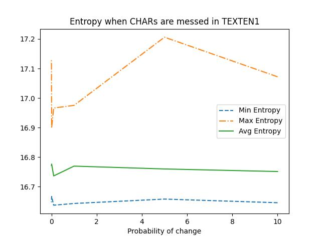
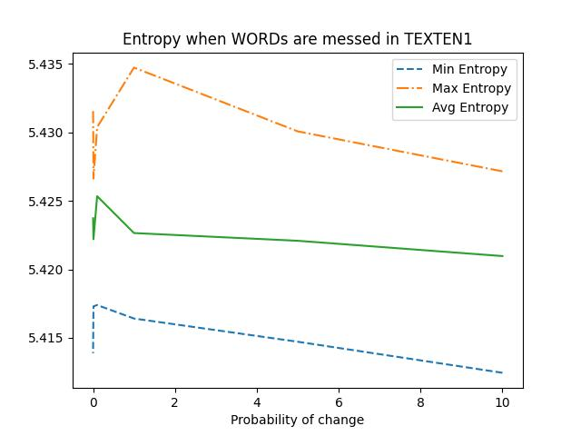
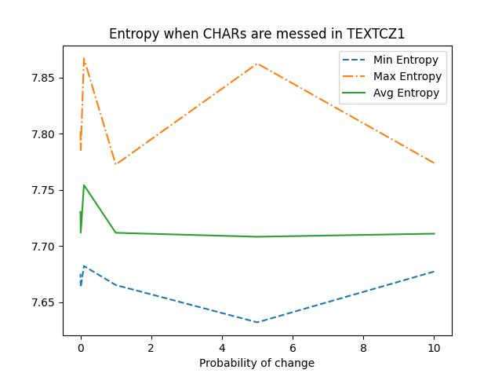
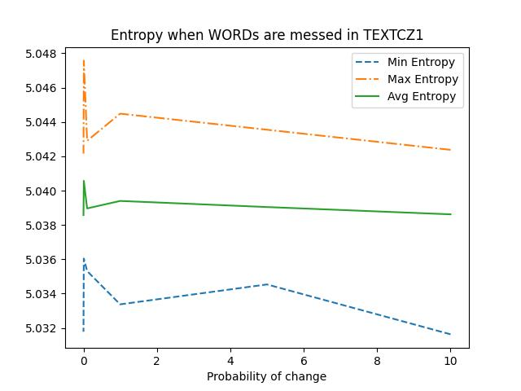

Task N1. Entropy of a Text
Task N1.1 Compute this conditional entropy and perplexity for the file TEXTEN1.txt
Number of unique words in texten1 9607 Number of unique words in textcz1 42826 Conditional entropy for English 5.287480117645905 Perplexity for English PX = 39.0562117685497 Conditional entropy for Czech 4.747789344091995 Perplexity for Czech PX = 26.86748441730447
Task N1.2 Mess up with text and measure how it affects entropy for the file TEXTEN1.txt
Entropies of texten1 with messed CHARs
| Probability, % | Min Entropy | Max Entropy | Avg Entropy |
|---|---|---|---|
| 10 | 5.2895461196646 | 5.309390150319673 | 5.298204838998885 |
| 5 | 5.288703408636961 | 5.324575994174408 | 5.300350520740733 |
| 1 | 5.2920316986689055 | 5.323238278107056 | 5.298267292282641 |
| 0.1 | 5.286780478666108 | 5.332666830617948 | 5.305897896482298 |
| 0.01 | 5.290398707296836 | 5.330371910034106 | 5.301742289065928 |
| 0.001 | 5.290203717043805 | 5.318305442610234 | 5.299475368119893 |
Entropies of texten1 with messed WORDs
| Probability, % | Min Entropy | Max Entropy | Avg Entropy |
|---|---|---|---|
| 10 | 5.412455941394924 | 5.427148818903633 | 5.420968472212118 |
| 5 | 5.414719342925983 | 5.4300635650587905 | 5.422083424714532 |
| 1 | 5.416413836766047 | 5.434715654260593 | 5.422647468503018 |
| 0.1 | 5.417395780859448 | 5.430366776770127 | 5.425335438471494 |
| 0.01 | 5.417300545450248 | 5.426614760414595 | 5.422195332706909 |
| 0.001 | 5.413883192791053 | 5.431702883130931 | 5.423727821532589 |
Entropies of textcz1 with messed CHARs ---
| Probability, % | Min Entropy | Max Entropy | Avg Entropy |
|---|---|---|---|
| 10 | 4.760236161985873 | 4.784577059695414 | 4.772834718893179 |
| 5 | 4.753400298786042 | 4.833709073418793 | 4.782934397412562 |
| 1 | 4.763236395044169 | 4.849637075338729 | 4.790167440604123 |
| 0.1 | 4.758033836250656 | 4.794534949234246 | 4.776757638806332 |
| 0.01 | 4.756325869204823 | 4.8078545269428 | 4.777475034872895 |
| 0.001 | 4.759940462997428 | 4.800780890154309 | 4.774940250579594 |
Entropies of textcz1 with messed WORDs
| Probability, % | Min Entropy | Max Entropy | Avg Entropy |
|---|---|---|---|
| 10 | 5.03163186858502 | 5.042376585306392 | 5.038620016097987 |
| 5 | 5.034536652019816 | 5.0435486463896115 | 5.039044773815826 |
| 1 | 5.033377336228464 | 5.044484079716182 | 5.039400226508779 |
| 0.1 | 5.035314422954056 | 5.042903178132163 | 5.038964101389995 |
| 0.01 | 5.03604511471345 | 5.047574142355513 | 5.040572466089326 |
| 0.001 | 5.031782861587651 | 5.042157388506108 | 5.038576071394454 |
Entropy when CHARs are messed in TEXTEN1

Entropy when WORDs are messed in TEXTEN1

Entropy when CHARs are messed in TEXTCZ1

Entropy when WORDs are messed in TEXTCZ1
